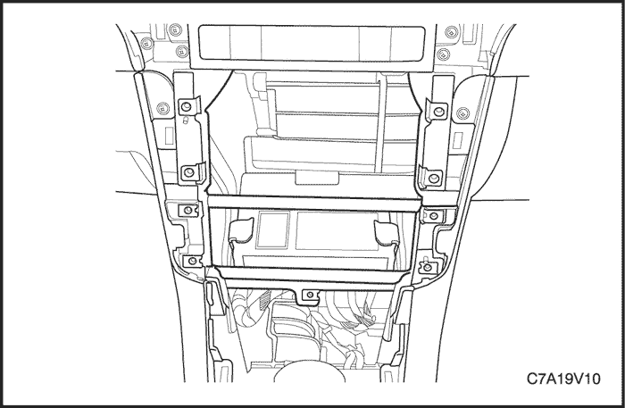

SECCIÓN
MANTENIMIENTO Y REPARACIÓN
servicio con vehículo en marcha



Módulo de control de la carrocería (BCM)
Procedimiento de desmontaje
- Desconecte el cable negativo de la batería.
- Desmonte la radio y el interruptor del aire acondicionado.
- Desmonte el alojamiento o el conjunto de la palanca de mando del cambio de marchas. Según el tipo de transmisión, consulte la Sección 5A, AISIN - 51LE - Caja de cambios automática o la Sección 5B, Caja de cambios manual de cinco velocidades.
- Desenchufe los conectores eléctricos.
- Desmonte el módulo de control de la carrocería (BCM).
procedimiento de montaje
- Monte el módulo de control de la carrocería (BCM).
- Enchufe los conectores eléctricos.
- Monte el alojamiento o conjunto de la palanca de mando del cambio de marchas. Según el tipo de transmisión, consulte la Sección 5A, AISIN - 51LE - Caja de cambios automática o la Sección 5B, Caja de cambios manual de cinco velocidades.
- Monte la radio y el interruptor del aire acondicionado.
- Conecte el cable negativo de la batería.
Programación del módulo de control de la carrocería (BCM)
Los siguientes procedimientos están diseñados para programar correctamente el BCM durante el servicio relacionado con dicho módulo. Antes de empezar, lea detenidamente y por completo estos procedimientos.
Importante: El vehículo no se pondrá en marcha y es posible que no puedan usarse otras funciones si no se configura correctamente el BCM de repuesto. Deben seguirse estos procedimientos:
- Programación del BCM
- Memorización de la identificación de sujeciones
Programación del BCM
En el menú principal del scanner, seleccione el sistema de programación de servicio y siga las instrucciones en pantalla.
Memorización de la identificación de sujeciones
Seleccione en el scanner Carrocería > Módulo de control de la carrocería > Programación > Identificación de SDM, y siga las instrucciones en pantalla.
DESCRIPCIÓN GENERAL Y FUNCIONAMIENTO DEL SISTEMA
El módulo de control de la carrocería se compone del módulo de control de la carrocería (BCM), comunicaciones y varias entradas y salidas. Algunas entradas, salidas y mensajes requieren la interacción de otros módulos con el BCM. El BCM también tiene terminales de entrada y salida específicos para controlar las funciones de la carrocería del vehículo. La tensión positiva de la batería que se suministra al BCM procede del fusible del BCM que hay en el bloque de fusibles del motor. El módulo tiene dos masas en GX201, así como una directamente conectada a la batería del vehículo. El BCM está conectado a los buses de datos serie GMLAN de alta y de baja velocidad y actúa como pasarela entre ellos. Si el BCM no se comunica, el vehículo no puede ponerse en marcha porque el módulo de control electrónico del motor/tren de potencia (ECM/PCM) y el módulo de control del dispositivo antirrobo del vehículo (VTD) no pueden comunicarse si el BCM no sirve de pasarela.
Matriz de modos de alimentación
El BCM del vehículo funciona como matriz de modos de alimentación (PMM). El interruptor de contacto es un interruptor de corriente baja con múltiples señales discretas a la PMM para determinar el modo de alimentación que se enviará por los circuitos de datos serie a los demás módulos que necesiten esta información, de este modo la PMM activará relés y otras salidas directas según sea preciso.
Matriz de modos de alimentación de datos serie
La alimentación a muchos de los circuitos de este vehículo se controla mediante el módulo designado por la matriz de modo de alimentación (PMM). La PMM de este vehículo es el módulo de control de la carrocería (BCM). El interruptor de contacto es un interruptor de corriente baja con múltiples señales discretas a la PMM para determinar el modo de alimentación que se enviará por los circuitos de datos serie a los demás módulos que necesiten esta información. La PMM activará relés y otras salidas directas según sea preciso. La PMM determina qué modo de alimentación [solicitud de apagado (OFF), accesorios (ACC), marcha (RUN), arranque (CRANK)] hace falta y comunica esta información a otros módulos a través de los datos serie. Los módulos que tienen entradas de tensión conmutada pueden funcionar en un modo predeterminado si el mensaje de datos serie de la PMM no coincide con lo que cada módulo puede observar en sus propias conexiones.
La PMM recibe señales del interruptor de contacto para identificar el modo de alimentación deseado por el conductor. La siguiente tabla con parámetros de modo de alimentación de PMM muestra el estado correcto de dichos parámetros (circuitos) con sus correspondientes posiciones en el interruptor de contacto.
Parámetros de modo de alimentación de PMM
Posición del interruptor de contacto | Modo de alimentación transmitido | Enc., apagado/marcha/arranque (circuito de tensión de apagado/marcha/arranque) | Encendido, accesorios/marcha (circuito de tensión de accesorios) | Encendido, marcha/arranque (circuito de tensión del encendido 1) |
OFF, llave quitada | Desconectado | Llave quitada/ACC | Inactivo | Inactivo |
OFF, llave puesta (LOCK) | Desconectado | Llave puesta/OFF | Inactivo | Inactivo |
ACCESORIOS | Accesorios | Llave puesta/ACC | Activo | Inactivo |
ON | En marcha | En marcha | Activo | Activo |
ARRANQUE | Petición de arranque | Arranque | Inactivo | Activo |
Estados de reactivación/suspendido
El módulo de control de la carrocería (BCM) es capaz de controlar o realizar todas las funciones del BCM en estado reactivado. El BCM entra en modo suspendido cuando se interrumpe el control activo o la supervisión normal de las funciones del sistema y pasa un límite de tiempo. El BCM debe detectar determinadas entradas de reactivación antes de entrar en estado reactivado. El BCM supervisa la presencia de estas entradas durante el estado suspendido.
El BCM entrará en estado suspendido si se detecta alguna de las siguientes entradas de reactivación:
- Actividad en la línea de datos serie.
- Detección de una reconexión de la batería.
- Señal de alguna puerta abierta.
- Faros encendidos.
- Llave puesta en contacto.
- Llave de contacto en posición ON.
- Luces de estacionamiento encendidas.
- Mensaje del mando a distancia de las puertas o arranque remoto.
El BCM entrará en estado suspendido cuando se den todas estas condiciones:
- La llave de contacto esté en la posición OFF y la llave esté quitada.
- No haya actividad en la línea de datos serie.
- No se ordenen salidas.
- No haya en ese momento temporizadores de retardo activados.
- No haya entradas de reactivación.
Si se cumplen todas estas condiciones, el BCM entrará en modo suspendido o de ahorro de energía.
Pasarela
El BCM de este vehículo funciona como una pasarela o traductor. El objetivo de la pasarela es traducir mensajes de datos serie entre los buses de alta velocidad GMLAN y los buses de baja velocidad GMLAN durante la comunicación entre varios módulos. La pasarela interactuará con cada red según el protocolo de transmisión de dicha red.
Un ejemplo de la necesidad de estas comunicaciones es la comunicación entre el módulo de control electrónico del motor (ECM), cuyos datos serie son de alta velocidad, y el módulo de control del dispositivo antirrobo del vehículo (VTD) con datos serie de baja velocidad. Si estos módulos no pueden intercambiar información, el vehículo no puede ponerse en marcha.
Todas las comunicaciones entre el BCM y un scanner se hacen a través de los circuitos de datos serie GMLAN de alta velocidad. Los DTCs de pérdida de comunicación se suelen activar en módulos que no sufren fallo de comunicación.
Control de datos serie de alimentación retenida de accesorios (RAP)
El módulo recibe el mensaje de modo de alimentación del módulo de control de la carrocería (BCM) por los circuitos de datos serie, que indican cuando está vigente el modo de alimentación retenida de accesorios (RAP). El BCM supervisa la posición del interruptor de contacto, el estado de la batería y de las puertas del habitáculo para determinar si debería iniciarse el RAP. A continuación, los módulos permiten el funcionamiento de los sistemas que controlan tal como requiera su modo de alimentación RAP. Los componentes y sistemas que están activos en RAP también se activan siempre que la llave de contacto está en cualquier posición menos OFF.
El modo RAP finalizará cuando se cumpla una de las siguientes condiciones:
- El BCM reciba una entrada indicando la apertura de cualquier puerta del habitáculo una vez quitada la llave de encendido del contacto.
Importante: La única puerta que apagará la radio durante el modo RAP es la puerta del conductor. Esta es una función de la radio, que se apagará después del límite de tiempo.
- El temporizador interno del BCM para el modo RAP finalice a los 10 minutos aproximadamente.
- El BCM detecte que la capacidad de la batería disminuye por debajo de un límite fijado.
A continuación, el BCM envía un mensaje de modo de alimentación de datos serie que finaliza la función RAP.
Control del relé de alimentación retenida de accesorios (RAP)
El BCM mantiene la el relé de RAP excitado durante todos los modos de alimentación, salvo durante apagado-reactivación y arranque. El relé también está excitado durante aproximadamente 10 minutos después de girarse la llave de contacto a la posición OFF y quitarse la llave, siempre que no haya ninguna puerta abierta.
Los dispositivos alimentados por el relé de accesorios durante el modo de alimentación retenida de accesorios (RAP) son el techo corredizo, los interruptores de los elevalunas eléctricos y el bloqueo de estacionamiento/BTSI.
Control de la carrocería
Los diversos circuitos de entrada y salida del BCM se describen en las correspondientes áreas funcionales que vienen indicadas en los esquemas eléctricos del BCM. Los síntomas relacionados con el BCM incluyen, entre otros, los siguientes: